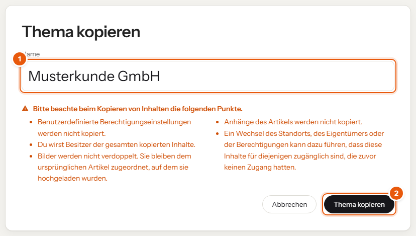
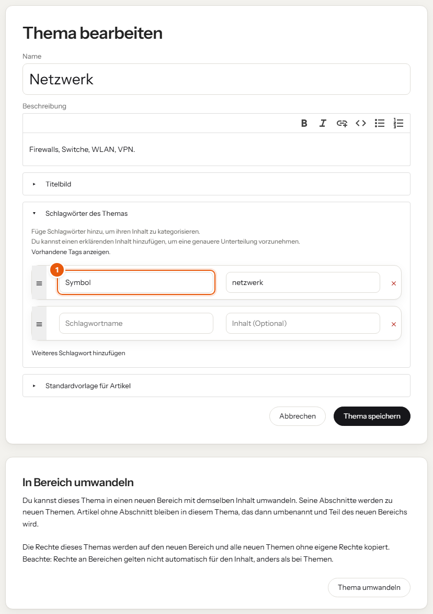

Als Redaktion legst du neue Themen an, zum Beispiel für einen neuen Kunden, und gibst ihnen Symbol, Vorlage und Rechte.
Das Thema „Musterkunde GmbH“ ist die Vorlage für alle Kunden. Kopieren übernimmt Abschnitte und Artikel und stellt die Kopie automatisch in den Bereich „Kunden“.

Im Bild: (1) der neue Name, (2) der Knopf zum Kopieren.
Eigene Rechte werden beim Kopieren nicht übernommen. Für Kunden ist das richtig so: Ohne eigene Rechte sehen nur Admin, Redaktion und Technik das neue Thema. Freigaben für Azubis setzt du bei Bedarf neu (siehe „Rechte und Freigaben“).
Das Symbol auf den Karten kommt aus dem Schlagwort Symbol. Leser sehen dieses Schlagwort nicht.
Symbol, Inhalt zum Beispiel netzwerk. Speichern.
| Wert | Passt zu | Wert | Passt zu |
|---|---|---|---|
cloud | Microsoft 365 | netzwerk | Netzwerk |
server | Server | schild | Security |
bildschirm | Clients | telefon | Telefonie |
werkzeug | Tools | kunde | ein Kunde |
person-neu | Onboarding | ticket | Tickets |
notfall | Notfall | privat | Datenschutz |
checkliste | Checklisten | idee | Wissen |
code | eigene Werkzeuge | hilfe | Handbuch |
Weitere Symbole legt die Technik als SVG-Datei in den Theme-Ordner symbole; der Dateiname ohne Endung ist der Wert.